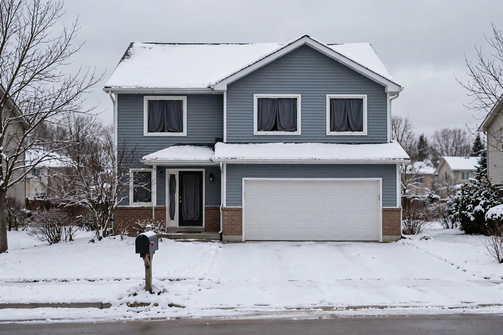

Vacant vs. unoccupied: how an empty home changes your insurance

General information only. This guide explains, in general terms, how Canadian home insurance treats a home nobody is living in. It is not insurance advice, it does not recommend any insurer or product, and it is not written by a broker or agent. Every insurer defines and handles vacancy in its own policy wording — confirm anything that matters with your own insurer or broker, and treat your policy documents as the final word.
Two words that sound alike and mean different things
Most guides to this topic lead with a number — thirty days — and stop there. The number matters, but it is not the definition, and starting with it produces the most common misunderstanding in this area: that a home is fine for a month and in trouble on day thirty-one, whatever the circumstances. Insurers start somewhere else. Square One, a Canadian insurer, defines the two terms by intention: a home is vacant when the occupants have left and do not intend to return, and no new occupants have moved in yet; a home is unoccupied when it is empty but the occupants do plan to return — Square One's example is a vacation home, empty most of the year, which most providers would not consider vacant because the owners are coming back. PolicyMe's definitions point the same direction with different surface details: unoccupied as temporarily empty but still furnished, with the owner planning to return, and vacant as empty of furnishings and people with no plan to return soon. The definitions differ in their details because each insurer writes its own — which is why Square One directs readers to the Definitions section of their own policy for their provider's exact meaning. What the definitions share is the pivot: whether anyone is coming back.
That pivot kills a durable myth. Square One states it flatly: contrary to common belief, the presence of furniture or personal belongings has no bearing on a home's occupancy status — vacancy is based on whether the occupants are planning to return, not on what is inside the house. A fully furnished home whose owners have moved out for good can be vacant; a spare, nearly empty cottage its owners return to every spring can be merely unoccupied. It also means vacancy can begin in a home that looks nothing like the word suggests: Square One notes that even a brand-new home can be vacant — buy a home and not move in right away, or hold a rental property with no tenants living in it, and providers consider it vacant from the start.
The status clock: vacant and unoccupied, side by side
| Unoccupied | Vacant | |
|---|---|---|
| Who has left | The usual occupants, temporarily | The occupants, with no intention of returning — or no occupant has arrived yet |
| Intention to return | Yes — a return is planned | No — or the next occupant has not moved in |
| Do furnishings matter? | No — per Square One, furniture and belongings have no bearing on the status; intention decides it | |
| Typical examples | A home during a long trip; a vacation home between visits | A home moved out of before a sale; an inherited home; a rental between tenants; a new purchase not yet moved into |
| Coverage posture | The standard policy generally continues, subject to its absence conditions (checks, heat, water) | The standard policy may not respond at all — the insurer must be told, and a vacancy arrangement or specialised policy may be needed |
Where does the thirty days fit? As a notification and coverage threshold inside many policies, not as the definition. PolicyMe notes that in most cases a policyholder is required to notify the insurer if the home will be vacant for more than 30 days, and that the policy itself specifies the time frame for notification. Think of the status as the label and the thirty days as one of the deadlines attached to the label — important, but downstream of the question of whether anyone is coming back.
The notification duty: the step that decides everything else
Whatever the label, the recurring instruction from every source is the same: tell the insurer. Square One calls it critical to inform the provider about any change in occupancy — some providers will insure vacant homes and others will not, and if the provider is not told, coverage could be void. PolicyMe states the consequence at its sharpest: leaving an insured home vacant without informing the insurer runs the risk of voiding the policy entirely; at minimum, claims for water damage, theft, and vandalism will likely be impossible to submit — and the policy could be dropped even over damage that vacant home coverage would normally have covered. The asymmetry is the point worth remembering. Notifying the insurer starts a conversation with several possible outcomes, some of them inconvenient. Not notifying converts an ordinary empty-home situation into a contract problem that surfaces exactly when a claim is filed — the worst possible moment to discover it.
The conditions clock: the rules that run during any absence
The second clock is the one most "30 days" guides never mention, and it runs on unoccupied homes too — homes whose occupants are definitely coming back. The Insurance Bureau of Canada's winter guidance describes the mechanism: if you are away, maintain heat in the dwelling and have someone regularly check the property according to your insurer's recommendations, because most policies outline specific details on how often the home must be checked by a competent person to ensure heat is being maintained. Square One's protection guidance gives the rhythm a concrete shape: many providers require someone to check on a home empty for more than a few days, whether vacant or temporarily unoccupied, and its own advice is a check at least once a week — and daily during the heating season.
The reason the conditions clock matters independently is water. IBC states that most insurance policies exclude frozen-pipe and water damage if the home is vacant — even if the homeowner has permission for the vacancy. Permission fixes the status problem; it does not restore the water coverage. IBC's paired instructions follow from that: if the home is vacant, shut off the water supply and drain the lines to help prevent frozen pipes; and for occupied homes, the standard policy covers burst-pipe damage provided the pipes are in the heated portion of the home and reasonable steps were taken to maintain heat. Square One's guidance lands in the same place from the protection side: shut off the main water supply and drain the lines if daily heating-season checks cannot be arranged, and keep an empty home's indoor temperature around 16 °C, give or take a few degrees, and not below 12 °C, to reduce the freezing risk. Two clocks, then: the status clock decides what your policy calls the empty home, and the conditions clock decides whether a winter water loss is covered — and they are settled by different evidence. A vacancy permit answers the first. A neighbour's check-in log and a drained water system answer the second.
What typically falls away — and what a vacancy arrangement covers instead
When a home is vacant, the standard policy's protection thins in predictable places. Square One notes that even providers willing to insure vacant homes may attach restrictions — a provider may exclude vandalism coverage for a vacant home, and water damage is almost always excluded when a home is vacant, whether the provider was told or not. PolicyMe's list of what vacant home insurance usually will not cover matches: water damage, theft, and vandalism, including glass breakage — the three perils an empty home is most exposed to, since nobody is present to discover a leak early, and an obviously empty house is a more likely target. What exists instead is a narrower arrangement: PolicyMe explains that vacant coverage may require a specialised policy, sometimes known as a vacancy permit, which typically covers a basic list of perils — fire, lightning, hail and windstorm, falling objects, and damage caused by squatters. Not all insurers offer it, the covered perils vary by provider, and it costs more than standard insurance: PolicyMe notes premiums for vacant homes might be 50% higher than standard homeowners premiums, or more, priced on the home's location and condition, the duration of the vacancy, and the owner's claims history. Individual terms vary enough that examples must be labelled as examples: Square One describes its own arrangement as excluding water damage after a home has been vacant for 30 days while glass and vandalism coverage remain, with only a slight increase in the deductible — one insurer's terms, useful as a picture of how these arrangements are assembled, not as a market standard.
The situation map: six empty-home scenarios
Labels are easier to apply to real situations than to definitions. The map below joins each common scenario to its likely label, the coverage effect to expect, and the first move — as general information, with the reminder that an insurer's own wording governs its policy.
| Situation | Likely label | First move |
|---|---|---|
| Moved out before the sale closes | Vacant — the occupants are not returning | Tell the insurer before the move; ask about a vacancy permit or specialised policy for the gap |
| Inherited or estate home | Vacant — no occupant, sale or transfer pending | Contact the insurer as soon as the estate controls the home; occupancy has changed even if nothing else has |
| Rental property between tenants | Vacant — Square One counts a rental with no tenants as vacant | Notify the insurer at each change of tenancy; confirm how the landlord policy treats the gap |
| Major renovation, living elsewhere | Often its own category — Square One treats homes under construction or major renovation separately from vacant dwellings | Notify the insurer before work begins; Square One warns coverage may become void if renovations or construction proceed without advance notice |
| Snowbird or long-trip absence | Unoccupied — the occupants are returning | The conditions clock is the work: arrange competent-person checks at the policy's frequency, maintain heat, and decide on the water shut-off |
| Bought a home, moving in later | Vacant — even a brand-new home, per Square One, if nobody has moved in | Raise it when the policy is arranged, not at move-in; the vacancy may predate your first night there |
PolicyMe's list of situations that may need vacant home insurance overlaps the map — a house moved out of but not yet sold, an inherited house, a house under major renovations, a vacation house routinely left empty for long periods, a rental with no current tenants, a house that is unlivable — which is a useful cross-check: whatever the label debate, the industry treats these as the moments to pick up the phone.
Before the home sits empty: a working procedure
This is a how-to topic in one respect — there is a sequence that protects both the home and the coverage, assembled from PolicyMe's pre-vacancy checklist and the IBC and Square One guidance above:
- Inform the insurer as soon as the vacancy or long absence is known — before it begins where possible — and discuss what arrangement applies. Get the outcome in the policy record, not just in a phone call's memory.
- Secure the home: lock all entry points, and keep any security system active, particularly if a return is planned.
- Document the property's condition at the time it becomes empty, so later damage can be shown to have happened during the empty period.
- Arrange the check-ins at the frequency the policy sets — a friend, family member, or employee checking every few days, with routine attention to driveway, walkways, and yard so the home does not advertise its emptiness.
- Make the water decision explicitly: maintain heat with reliable checks, or shut off the water supply and drain the lines — IBC's instruction for a vacant home, and Square One's fallback when daily heating-season checks cannot be arranged.
What success looks like: the insurer's file shows the occupancy change and the arrangement agreed, a named person is checking on a schedule the policy recognises, and the water question has a deliberate answer rather than a default. If any of the three is missing, the empty period is running on assumption — which is what the claims process will test.
FAQ
Does leaving furniture in the home keep it from being "vacant"? No. Square One states that furniture and belongings have no bearing on occupancy status; vacancy turns on whether the occupants plan to return. A furnished home can be vacant and a sparsely furnished one merely unoccupied.
Is the 30-day rule the definition of vacancy? No — it is a common notification and coverage threshold, not the definition. PolicyMe notes most policies require notification if a home will be vacant for more than 30 days, while the status itself is defined by occupancy and intention in the policy's Definitions section.
I have vacancy permission. Is a burst pipe covered? Permission does not settle it. IBC states most policies exclude frozen-pipe and water damage in a vacant home even with permission for vacancy — which is why the shut-off and drain steps matter more than the permit for this particular peril.
We're away for the winter but definitely coming back. Does any of this apply? The status is unoccupied, not vacant — but the conditions clock applies in full: policy check-in requirements, maintained heat, and the water decision. Square One's guidance suggests checks at least weekly, and daily during the heating season.
Does a renovation make the home vacant? Not automatically. Square One treats homes under construction or major renovation as their own insurance category, and smaller renovations can often continue under normal coverage after notification — but it warns coverage may become void if work proceeds without telling the insurer in advance.
The short version
- Vacant means the occupants have left without intending to return (or none have arrived); unoccupied means empty for now, with a return planned. Furniture is irrelevant to the distinction.
- The "30 days" figure is a notification and coverage threshold in many policies — not the definition of vacancy.
- Two clocks run on an empty home: the status clock (what the policy calls it) and the conditions clock (check-ins, heat, water) — and most policies exclude frozen-pipe and water damage in a vacant home even with vacancy permission.
- Undisclosed vacancy risks a voided policy; disclosed vacancy usually means a narrower vacancy permit or specialised policy covering basic perils, at a higher premium.
- The procedure that protects the home and the claim: notify early, secure, document condition, schedule checks, and make the water shut-off decision deliberately.
General information only — not insurance advice. This site is not a broker, agent, or insurer. Vacancy definitions, notification deadlines, exclusions, and vacancy arrangements vary by insurer and province, and every claim turns on its facts and the policy wording. Talk to a licensed insurance professional about your situation, and treat your own policy document as the final word.
Keep readingNext: Burst pipes in winter: what's covered and what voids your claim →